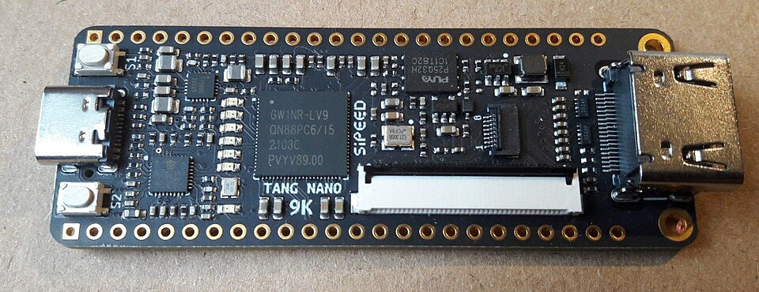

E09 — FPGA y HDL
"En software escribís código que CORRE sobre hardware fijo. Con FPGA escribís código que SE VUELVE el hardware. Esa es la diferencia que vуela la cabeza." — el módulo que cierra el campus
El último módulo del curso, y uno de los más profundos: en vez de programar un procesador, diseñás el circuito digital mismo. Verilog/VHDL describen hardware; una FPGA lo materializa. Es el espejo perfecto de los compiladores — pero "compilás" a silicio.
1. La diferencia fundamental: CPU vs FPGA
| CPU / Microcontrolador | FPGA | |
|---|---|---|
| Qué hacés | Escribís instrucciones que ejecuta | Describís un circuito que se construye |
| Hardware | Fijo (la arquitectura no cambia) | Reconfigurable (cambia con tu diseño) |
| Ejecución | Secuencial (una instrucción a la vez) | Paralela real (todo a la vez, físicamente) |
| Lenguaje | C, Python (imperativo) | Verilog, VHDL (descriptivo, concurrente) |
| Analogía | Un chef que sigue una receta paso a paso | Una fábrica donde diseñás las máquinas |
2. El cambio mental más difícil: concurrencia real
3. Verilog: describir hardware
// Una compuerta AND (la de E02) descrita en Verilog
module and_gate(input a, input b, output y);
assign y = a & b; // y ES físicamente a AND b — siempre, en paralelo
endmodule
// Un sumador de 4 bits — NO es un loop, es un circuito
module sumador(input [3:0] a, input [3:0] b, output [4:0] suma);
assign suma = a + b; // el sintetizador genera las compuertas del sumador (E02)
endmodule
// Un contador con reloj (lógica secuencial — flip-flops de E02)
module contador(input clk, input reset, output reg [7:0] cuenta);
always @(posedge clk) begin // en cada flanco del reloj
if (reset) cuenta <= 0;
else cuenta <= cuenta + 1;
end
endmodule& es la compuerta AND de E02. El always @(posedge clk) son los flip-flops sincronizados por reloj de E02. El sumador es el circuito que viste construido con XOR/AND. Verilog es el lenguaje para describir TODO lo de E02 sin dibujar compuertas a mano — y M01 (álgebra booleana) es la matemática que lo gobierna.
4. El flujo: de Verilog a silicio
Verilog (descripción)
↓ SÍNTESIS (≈ "compilar") ← el espejo de M16
Netlist (lista de compuertas y conexiones)
↓ PLACE & ROUTE (ubicar en la FPGA)
Bitstream (configuración física)
↓ cargar en la FPGA
El circuito EXISTE y funciona en paralelocódigo → lexer/parser → IR → optimización → código máquina. Acá: Verilog → parser → netlist → optimización → bitstream. La síntesis ES compilación, con las mismas etapas (parsing, representación intermedia, optimización), pero el output configura compuertas en vez de generar instrucciones.
5. ¿Cuándo FPGA y no CPU?
| Usá FPGA cuando... | Ejemplo |
|---|---|
| Necesitás paralelismo masivo en tiempo real | Procesar video 4K pixel por pixel |
| Latencia ultra baja y determinista | Trading de alta frecuencia (nanosegundos) |
| Protocolos custom de alta velocidad | Telecom, instrumentación científica |
| Acelerar un algoritmo específico | DSP (E07), criptografía (M29), inferencia ML |
| Prototipar un chip antes de fabricarlo (ASIC) | Diseño de CPUs, GPUs |
6. FPGA vs ASIC
7. Empezar sin comprar una FPGA
- EDA Playground — escribí y simulá Verilog en el browser, gratis.
- HDLBits — ejercicios interactivos de Verilog, de cero a avanzado. El mejor punto de entrada.
- Nand2Tetris — construí una CPU desde compuertas (conecta E02 + E09 + M13).
- Hardware barato para después: placas iCE40 o Tang Nano (~$10-30) con toolchains open source (Yosys).

8. Errores típicos del que viene del software
a = 1; b = 2; NO se ejecutan en orden — son circuitos paralelos. El error mental #1.= (blocking) con <= (non-blocking): en lógica secuencial usás <=; mezclar causa bugs sutiles de timing.if sin else en lógica combinacional crea memoria fantasma. Cubrí todos los casos.console.log.9. Recursos
- HDLBits — práctica interactiva imperdible
- Nandland — FPGA para principiantes
- "Digital Design and Computer Architecture" (Harris & Harris) — une E02, E09 y M13
🎉 Cierre del curso de Computación Física
Ahora entendés la columna completa: desde el electrón hasta el programa. Pocos ingenieros ven los dos lados — vos sí.
✅ Checkpoint
1. ¿Cuál es la diferencia fundamental entre programar un CPU y diseñar para FPGA?
En un CPU escribís instrucciones que un hardware fijo ejecuta secuencialmente. En FPGA describís un circuito que SE CONSTRUYE físicamente y corre en paralelo real. Software que corre vs hardware que ES.
2. ¿Por qué Verilog no es código secuencial?
Porque describe hardware: todo ocurre a la vez, en paralelo físico. Cada assign es un circuito permanente. No hay "orden de ejecución" — son compuertas reales funcionando simultáneamente.
3. ¿Cómo es la síntesis el espejo de M16 Compiladores?
Ambas traducen una descripción de alto nivel a algo ejecutable, con etapas similares (parsing, IR, optimización). M16: código → instrucciones máquina (software que corre). Síntesis: Verilog → bitstream (configuración de compuertas que ES el circuito).
4. ¿Cuándo conviene una FPGA sobre un CPU?
Cuando necesitás paralelismo masivo en tiempo real (video pixel a pixel), latencia ultra baja y determinista (trading), protocolos custom de alta velocidad, o acelerar un algoritmo específico (DSP, cripto, inferencia ML). El CPU es generalista; la FPGA es especialista paralela.
5. ¿Qué relación hay entre FPGA, ASIC y la CPU de M13?
Un ASIC es un chip fabricado para una función (tu CPU, GPU son ASICs). Se diseña en HDL como Verilog, se simula y se fabrica. La CPU de M13 fue descrita en un HDL antes de existir. E09 muestra el origen de todo el hardware del campus.
6. ¿Cómo conecta E09 con E02 y M01?
Verilog describe exactamente lo de E02 (compuertas con &, flip-flops con always @(posedge clk), sumadores) sin dibujar a mano. Y M01 (álgebra booleana) es la matemática que gobierna esas compuertas. E09 es la herramienta profesional para construir lo de E02 a escala.